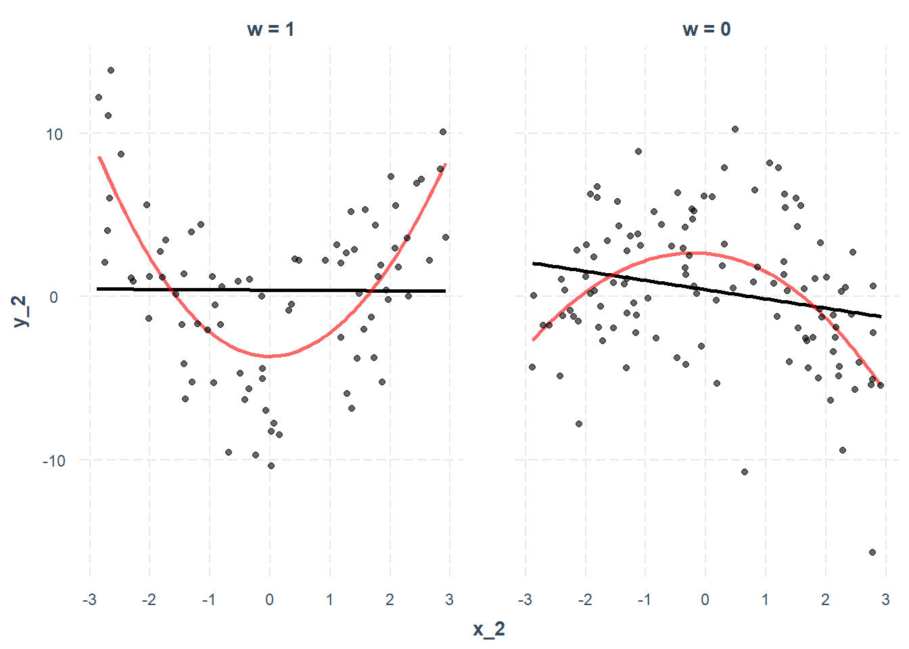
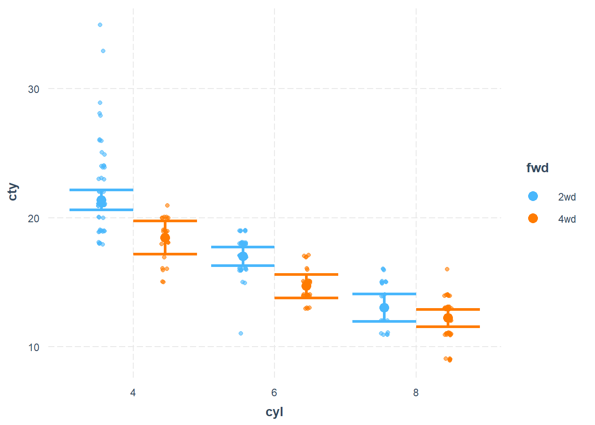
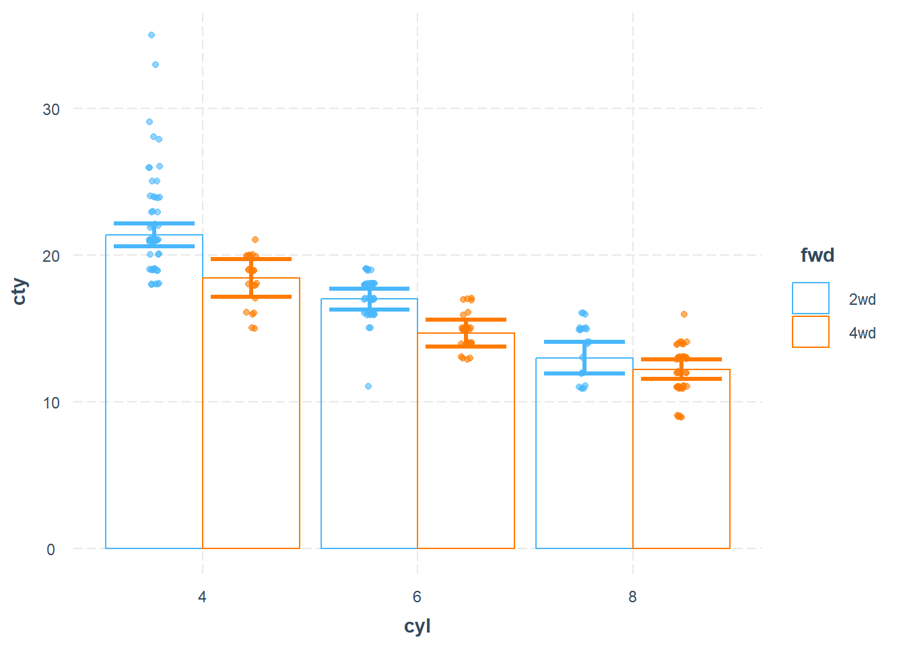

18.7 Application
18.7.1 emmeans Package
The emmeans package (Estimated Marginal Means) is a powerful tool for post-hoc analysis of linear models, enabling researchers to explore interaction effects through simple slopes and estimated marginal means.
To install and load the package:
The dataset used in this section is sourced from the UCLA Statistical Consulting Group, where:
gender(male, female) andprog(exercise program: jogging, swimming, reading) are categorical variables.lossrepresents weight loss, andhoursandeffortare continuous predictors.
library(tidyverse)
dat <- readRDS("data/exercise.rds") %>%
mutate(prog = factor(prog, labels = c("jog", "swim", "read"))) %>%
mutate(gender = factor(gender, labels = c("male", "female")))18.7.1.1 Continuous by Continuous Interaction
We begin with an interaction model between two continuous variables: hours (exercise duration) and effort (self-reported effort level).
contcont <- lm(loss ~ hours * effort, data = dat)
summary(contcont)
#>
#> Call:
#> lm(formula = loss ~ hours * effort, data = dat)
#>
#> Residuals:
#> Min 1Q Median 3Q Max
#> -29.52 -10.60 -1.78 11.13 34.51
#>
#> Coefficients:
#> Estimate Std. Error t value Pr(>|t|)
#> (Intercept) 7.79864 11.60362 0.672 0.5017
#> hours -9.37568 5.66392 -1.655 0.0982 .
#> effort -0.08028 0.38465 -0.209 0.8347
#> hours:effort 0.39335 0.18750 2.098 0.0362 *
#> ---
#> Signif. codes: 0 '***' 0.001 '**' 0.01 '*' 0.05 '.' 0.1 ' ' 1
#>
#> Residual standard error: 13.56 on 896 degrees of freedom
#> Multiple R-squared: 0.07818, Adjusted R-squared: 0.07509
#> F-statistic: 25.33 on 3 and 896 DF, p-value: 9.826e-1618.7.1.1.1 Simple Slopes Analysis (Spotlight Analysis)
Following Aiken and West (2005), the spotlight analysis examines the effect of hours on loss at three levels of effort:
Mean of
effortplus one standard deviationMean of
effortMean of
effortminus one standard deviation
library(emmeans)
effar <- round(mean(dat$effort) + sd(dat$effort), 1)
effr <- round(mean(dat$effort), 1)
effbr <- round(mean(dat$effort) - sd(dat$effort), 1)
# Define values for estimation
mylist <- list(effort = c(effbr, effr, effar))
# Compute simple slopes
emtrends(contcont, ~ effort, var = "hours", at = mylist)
#> effort hours.trend SE df lower.CL upper.CL
#> 24.5 0.261 1.352 896 -2.392 2.91
#> 29.7 2.307 0.915 896 0.511 4.10
#> 34.8 4.313 1.308 896 1.745 6.88
#>
#> Confidence level used: 0.95
# Visualization of the interaction
mylist <- list(hours = seq(0, 4, by = 0.4),
effort = c(effbr, effr, effar))
emmip(contcont, effort ~ hours, at = mylist, CIs = TRUE)
# Test statistical differences in slopes
emtrends(
contcont,
pairwise ~ effort,
var = "hours",
at = mylist,
adjust = "none"
)
#> $emtrends
#> effort hours.trend SE df lower.CL upper.CL
#> 24.5 0.261 1.352 896 -2.392 2.91
#> 29.7 2.307 0.915 896 0.511 4.10
#> 34.8 4.313 1.308 896 1.745 6.88
#>
#> Results are averaged over the levels of: hours
#> Confidence level used: 0.95
#>
#> $contrasts
#> contrast estimate SE df t.ratio p.value
#> effort24.5 - effort29.7 -2.05 0.975 896 -2.098 0.0362
#> effort24.5 - effort34.8 -4.05 1.931 896 -2.098 0.0362
#> effort29.7 - effort34.8 -2.01 0.956 896 -2.098 0.0362
#>
#> Results are averaged over the levels of: hoursThe three p-values obtained above correspond to the interaction term in the regression model.
For a professional figure, we refine the visualization using ggplot2:
library(ggplot2)
# Prepare data for plotting
mylist <- list(hours = seq(0, 4, by = 0.4),
effort = c(effbr, effr, effar))
contcontdat <-
emmip(contcont,
effort ~ hours,
at = mylist,
CIs = TRUE,
plotit = FALSE)
# Convert effort levels to factors
contcontdat$feffort <- factor(contcontdat$effort)
levels(contcontdat$feffort) <- c("low", "medium", "high")
# Generate plot
p <-
ggplot(data = contcontdat,
aes(x = hours, y = yvar, color = feffort)) +
geom_line()
p1 <-
p +
geom_ribbon(aes(ymax = UCL, ymin = LCL, fill = feffort),
alpha = 0.4)
p1 + labs(x = "Exercise Hours",
y = "Weight Loss",
color = "Effort",
fill = "Effort Level")18.7.1.2 Continuous by Categorical Interaction
Next, we examine an interaction where hours (continuous) interacts with gender (categorical). We set “Female” as the reference category:
dat$gender <- relevel(dat$gender, ref = "female")
contcat <- lm(loss ~ hours * gender, data = dat)
summary(contcat)
#>
#> Call:
#> lm(formula = loss ~ hours * gender, data = dat)
#>
#> Residuals:
#> Min 1Q Median 3Q Max
#> -27.118 -11.350 -1.963 10.001 42.376
#>
#> Coefficients:
#> Estimate Std. Error t value Pr(>|t|)
#> (Intercept) 3.335 2.731 1.221 0.222
#> hours 3.315 1.332 2.489 0.013 *
#> gendermale 3.571 3.915 0.912 0.362
#> hours:gendermale -1.724 1.898 -0.908 0.364
#> ---
#> Signif. codes: 0 '***' 0.001 '**' 0.01 '*' 0.05 '.' 0.1 ' ' 1
#>
#> Residual standard error: 14.06 on 896 degrees of freedom
#> Multiple R-squared: 0.008433, Adjusted R-squared: 0.005113
#> F-statistic: 2.54 on 3 and 896 DF, p-value: 0.05523Simple Slopes by Gender
# Compute simple slopes for each gender
emtrends(contcat, ~ gender, var = "hours")
#> gender hours.trend SE df lower.CL upper.CL
#> female 3.32 1.33 896 0.702 5.93
#> male 1.59 1.35 896 -1.063 4.25
#>
#> Confidence level used: 0.95
# Test slope differences
emtrends(contcat, pairwise ~ gender, var = "hours")
#> $emtrends
#> gender hours.trend SE df lower.CL upper.CL
#> female 3.32 1.33 896 0.702 5.93
#> male 1.59 1.35 896 -1.063 4.25
#>
#> Confidence level used: 0.95
#>
#> $contrasts
#> contrast estimate SE df t.ratio p.value
#> female - male 1.72 1.9 896 0.908 0.3639Since this test is equivalent to the interaction term in the regression model, a significant result confirms a moderating effect of gender.
18.7.1.3 Categorical by Categorical Interaction
Now, we examine the interaction between two categorical variables: gender (male, female) and prog (exercise program). We set “Read” as the reference category for prog and “Female” for gender:
dat$prog <- relevel(dat$prog, ref = "read")
dat$gender <- relevel(dat$gender, ref = "female")
catcat <- lm(loss ~ gender * prog, data = dat)
summary(catcat)
#>
#> Call:
#> lm(formula = loss ~ gender * prog, data = dat)
#>
#> Residuals:
#> Min 1Q Median 3Q Max
#> -19.1723 -4.1894 -0.0994 3.7506 27.6939
#>
#> Coefficients:
#> Estimate Std. Error t value Pr(>|t|)
#> (Intercept) -3.6201 0.5322 -6.802 1.89e-11 ***
#> gendermale -0.3355 0.7527 -0.446 0.656
#> progjog 7.9088 0.7527 10.507 < 2e-16 ***
#> progswim 32.7378 0.7527 43.494 < 2e-16 ***
#> gendermale:progjog 7.8188 1.0645 7.345 4.63e-13 ***
#> gendermale:progswim -6.2599 1.0645 -5.881 5.77e-09 ***
#> ---
#> Signif. codes: 0 '***' 0.001 '**' 0.01 '*' 0.05 '.' 0.1 ' ' 1
#>
#> Residual standard error: 6.519 on 894 degrees of freedom
#> Multiple R-squared: 0.7875, Adjusted R-squared: 0.7863
#> F-statistic: 662.5 on 5 and 894 DF, p-value: < 2.2e-16Simple Effects and Contrast Analysis
# Estimated marginal means for all combinations of gender and program
emcatcat <- emmeans(catcat, ~ gender * prog)
# Compare effects of gender within each program
contrast(emcatcat, "revpairwise", by = "prog", adjust = "bonferroni")
#> prog = read:
#> contrast estimate SE df t.ratio p.value
#> male - female -0.335 0.753 894 -0.446 0.6559
#>
#> prog = jog:
#> contrast estimate SE df t.ratio p.value
#> male - female 7.483 0.753 894 9.942 <.0001
#>
#> prog = swim:
#> contrast estimate SE df t.ratio p.value
#> male - female -6.595 0.753 894 -8.762 <.0001For a more intuitive presentation, we use a bar graph with error bars
# Prepare data
catcatdat <- emmip(catcat,
gender ~ prog,
CIs = TRUE,
plotit = FALSE)
# Generate plot
p <-
ggplot(data = catcatdat,
aes(x = prog, y = yvar, fill = gender)) +
geom_bar(stat = "identity", position = "dodge")
p1 <-
p + geom_errorbar(
position = position_dodge(.9),
width = .25,
aes(ymax = UCL, ymin = LCL),
alpha = 0.3
)
p1 + labs(x = "Exercise Program",
y = "Weight Loss",
fill = "Gender")
18.7.2 probemod Package
The probemod package is designed for moderation analysis, particularly focusing on Johnson-Neyman intervals and simple slopes analysis. However, this package is not recommended due to known issues with subscript handling and formatting errors in some outputs.
The Johnson-Neyman technique identifies values of the moderator (gender) where the effect of the independent variable (hours) on the dependent variable (loss) is statistically significant. This method is particularly useful when the moderator is continuous but can also be applied to categorical moderators.
Example: J-N Analysis in a loss ~ hours * gender Model
library(probemod)
myModel <-
lm(loss ~ hours * gender, data = dat %>%
select(loss, hours, gender))
jnresults <- jn(myModel,
dv = 'loss',
iv = 'hours',
mod = 'gender')The jn() function computes Johnson-Neyman intervals, highlighting the values of gender at which the relationship between hours and loss is statistically significant.
The Pick-a-Point method tests the simple effect of hours at specific values of gender, akin to spotlight analysis.
18.7.3 interactions Package
The interactions package is a recommended tool for visualizing and interpreting interaction effects in regression models. It provides user-friendly functions for interaction plots, simple slopes analysis, and Johnson-Neyman intervals, making it an excellent choice for moderation analysis.
18.7.3.1 Continuous by Continuous Interaction
This section covers interactions where at least one of the two variables is continuous.
Example: Interaction Between Illiteracy and Murder
We use the state.x77 dataset to explore how Illiteracy Rate and Murder Rate interact to predict Income across U.S. states.
states <- as.data.frame(state.x77)
fiti <- lm(Income ~ Illiteracy * Murder + `HS Grad`, data = states)
summary(fiti)
#>
#> Call:
#> lm(formula = Income ~ Illiteracy * Murder + `HS Grad`, data = states)
#>
#> Residuals:
#> Min 1Q Median 3Q Max
#> -916.27 -244.42 28.42 228.14 1221.16
#>
#> Coefficients:
#> Estimate Std. Error t value Pr(>|t|)
#> (Intercept) 1414.46 737.84 1.917 0.06160 .
#> Illiteracy 753.07 385.90 1.951 0.05724 .
#> Murder 130.60 44.67 2.923 0.00540 **
#> `HS Grad` 40.76 10.92 3.733 0.00053 ***
#> Illiteracy:Murder -97.04 35.86 -2.706 0.00958 **
#> ---
#> Signif. codes: 0 '***' 0.001 '**' 0.01 '*' 0.05 '.' 0.1 ' ' 1
#>
#> Residual standard error: 459.5 on 45 degrees of freedom
#> Multiple R-squared: 0.4864, Adjusted R-squared: 0.4407
#> F-statistic: 10.65 on 4 and 45 DF, p-value: 3.689e-06For continuous moderators, the standard values chosen for visualization are:
Mean + 1 SD
Mean
Mean - 1 SD
The interact_plot() function provides an easy way to visualize these effects.
library(interactions)
interact_plot(fiti,
pred = Illiteracy,
modx = Murder,
# Disable automatic mean-centering
centered = "none",
# Exclude the mean value of the moderator
# modx.values = "plus-minus",
# Divide the moderator's distribution into three groups
# modx.values = "terciles",
plot.points = TRUE, # Overlay raw data
# Different shapes for different levels of the moderator
point.shape = TRUE,
# Jittering to prevent overplotting
jitter = 0.1,
# Custom appearance
x.label = "Illiteracy Rate (%)",
y.label = "Income ($)",
main.title = "Interaction Between Illiteracy and Murder Rate",
legend.main = "Murder Rate Levels",
colors = "blue",
# Confidence bands
interval = TRUE,
int.width = 0.9,
robust = TRUE # Use robust standard errors
) 
If the model includes weights, they can be incorporated into the visualization
fiti <- lm(Income ~ Illiteracy * Murder,
data = states,
weights = Population)
interact_plot(fiti,
pred = Illiteracy,
modx = Murder,
plot.points = TRUE)
A partial effect plot shows how the effect of one variable changes across different levels of another variable while controlling for other predictors.
library(ggplot2)
data(cars)
fitc <- lm(cty ~ year + cyl * displ + class + fl + drv,
data = mpg)
summary(fitc)
#>
#> Call:
#> lm(formula = cty ~ year + cyl * displ + class + fl + drv, data = mpg)
#>
#> Residuals:
#> Min 1Q Median 3Q Max
#> -5.9772 -0.7164 0.0018 0.7690 5.9314
#>
#> Coefficients:
#> Estimate Std. Error t value Pr(>|t|)
#> (Intercept) -200.97599 47.00954 -4.275 2.86e-05 ***
#> year 0.11813 0.02347 5.033 1.01e-06 ***
#> cyl -1.85648 0.27745 -6.691 1.86e-10 ***
#> displ -3.56467 0.65943 -5.406 1.70e-07 ***
#> classcompact -2.60177 0.92972 -2.798 0.005597 **
#> classmidsize -2.62996 0.93273 -2.820 0.005253 **
#> classminivan -4.40817 1.03844 -4.245 3.24e-05 ***
#> classpickup -4.37322 0.93416 -4.681 5.02e-06 ***
#> classsubcompact -2.38384 0.92943 -2.565 0.010997 *
#> classsuv -4.27352 0.86777 -4.925 1.67e-06 ***
#> fld 6.34343 1.69499 3.742 0.000233 ***
#> fle -4.57060 1.65992 -2.754 0.006396 **
#> flp -1.91733 1.58649 -1.209 0.228158
#> flr -0.78873 1.56551 -0.504 0.614901
#> drvf 1.39617 0.39660 3.520 0.000525 ***
#> drvr 0.48740 0.46113 1.057 0.291694
#> cyl:displ 0.36206 0.07934 4.564 8.42e-06 ***
#> ---
#> Signif. codes: 0 '***' 0.001 '**' 0.01 '*' 0.05 '.' 0.1 ' ' 1
#>
#> Residual standard error: 1.526 on 217 degrees of freedom
#> Multiple R-squared: 0.8803, Adjusted R-squared: 0.8715
#> F-statistic: 99.73 on 16 and 217 DF, p-value: < 2.2e-16
interact_plot(
fitc,
pred = displ,
modx = cyl,
# Show observed data as partial residuals
partial.residuals = TRUE,
# Specify moderator values manually
modx.values = c(4, 5, 6, 8)
)To check whether an interaction is truly linear, we can compare fitted lines based on:
The whole sample (black line)
Subsamples based on the moderator (red line)
# Generate synthetic data
x_2 <- runif(n = 200, min = -3, max = 3)
w <- rbinom(n = 200, size = 1, prob = 0.5)
err <- rnorm(n = 200, mean = 0, sd = 4)
y_2 <- 2.5 - x_2 ^ 2 - 5 * w + 2 * w * (x_2 ^ 2) + err
data_2 <- as.data.frame(cbind(x_2, y_2, w))
# Fit interaction model
model_2 <- lm(y_2 ~ x_2 * w, data = data_2)
summary(model_2)
#>
#> Call:
#> lm(formula = y_2 ~ x_2 * w, data = data_2)
#>
#> Residuals:
#> Min 1Q Median 3Q Max
#> -13.3524 -3.3012 -0.0851 3.6035 15.0982
#>
#> Coefficients:
#> Estimate Std. Error t value Pr(>|t|)
#> (Intercept) -0.20314 0.50581 -0.402 0.688
#> x_2 -0.47184 0.31228 -1.511 0.132
#> w 0.03911 0.71376 0.055 0.956
#> x_2:w 0.29631 0.43098 0.688 0.493
#>
#> Residual standard error: 5.036 on 196 degrees of freedom
#> Multiple R-squared: 0.01338, Adjusted R-squared: -0.001726
#> F-statistic: 0.8857 on 3 and 196 DF, p-value: 0.4495
# Linearity check plot
interact_plot(
model_2,
pred = x_2,
modx = w,
linearity.check = TRUE,
plot.points = TRUE
)
18.7.3.1.1 Simple Slopes Analysis
A simple slopes analysis examines the conditional effect of an independent variable (\(X\)) at specific levels of the moderator (\(M\)).
How sim_slopes() Works:
Continuous moderators: Analyzes effects at the mean and ±1 SD.
Categorical moderators: Uses all factor levels.
Mean-centers all variables except the predictor of interest.
Example: Continuous by Continuous Interaction
sim_slopes(fiti,
pred = Illiteracy,
modx = Murder,
johnson_neyman = FALSE)
#> SIMPLE SLOPES ANALYSIS
#>
#> Slope of Illiteracy when Murder = 5.420973 (- 1 SD):
#>
#> Est. S.E. t val. p
#> -------- -------- -------- ------
#> -71.59 268.65 -0.27 0.79
#>
#> Slope of Illiteracy when Murder = 8.685043 (Mean):
#>
#> Est. S.E. t val. p
#> --------- -------- -------- ------
#> -437.12 175.82 -2.49 0.02
#>
#> Slope of Illiteracy when Murder = 11.949113 (+ 1 SD):
#>
#> Est. S.E. t val. p
#> --------- -------- -------- ------
#> -802.66 145.72 -5.51 0.00We can also visualize the simple slopes
# Store results
ss <- sim_slopes(fiti,
pred = Illiteracy,
modx = Murder,
modx.values = c(0, 5, 10))
# Plot the slopes
plot(ss)
For publication-quality results, we convert the simple slopes analysis into a table using huxtable.
library(huxtable)
ss <- sim_slopes(fiti,
pred = Illiteracy,
modx = Murder,
modx.values = c(0, 5, 10))
# Convert to a formatted table
as_huxtable(ss)| Value of Murder | Slope of Illiteracy |
| Value of Murder | slope |
|---|---|
| 0.00 | 535.50 (458.77) |
| 5.00 | -24.44 (282.48) |
| 10.00 | -584.38 (152.37)*** |
18.7.3.1.2 Johnson-Neyman Intervals
The Johnson-Neyman technique identifies the range of the moderator (\(M\)) where the effect of the predictor (\(X\)) on the dependent variable (\(Y\)) is statistically significant. This approach is useful when the moderator is continuous, allowing us to determine where an effect exists rather than arbitrarily choosing values.
Although the J-N approach has been widely used (P. O. Johnson and Neyman 1936), it has known inflated Type I error rates (Bauer and Curran 2005). A correction method was proposed by (Esarey and Sumner 2018) to address these issues.
Since J-N performs multiple comparisons across all values of the moderator, it inflates Type I error. To control for this, we use False Discovery Rate correction.
Example: Johnson-Neyman Analysis
sim_slopes(
fiti,
pred = Illiteracy,
modx = Murder,
johnson_neyman = TRUE,
control.fdr = TRUE, # Correction for Type I and II errors
# Include conditional intercepts
# cond.int = TRUE,
robust = "HC3", # Use robust SE
# Don't mean-center non-focal variables
# centered = "none",
jnalpha = 0.05 # Significance level
)
#> JOHNSON-NEYMAN INTERVAL
#>
#> When Murder is OUTSIDE the interval [-11.70, 8.75], the slope of Illiteracy
#> is p < .05.
#>
#> Note: The range of observed values of Murder is [1.40, 15.10]
#>
#> Interval calculated using false discovery rate adjusted t = 2.33
#>
#> SIMPLE SLOPES ANALYSIS
#>
#> Slope of Illiteracy when Murder = 5.420973 (- 1 SD):
#>
#> Est. S.E. t val. p
#> -------- -------- -------- ------
#> -71.59 256.60 -0.28 0.78
#>
#> Slope of Illiteracy when Murder = 8.685043 (Mean):
#>
#> Est. S.E. t val. p
#> --------- -------- -------- ------
#> -437.12 191.07 -2.29 0.03
#>
#> Slope of Illiteracy when Murder = 11.949113 (+ 1 SD):
#>
#> Est. S.E. t val. p
#> --------- -------- -------- ------
#> -802.66 178.75 -4.49 0.00To visualize the J-N intervals
johnson_neyman(fiti,
pred = Illiteracy,
modx = Murder,
control.fdr = TRUE, # Corrects for Type I error
alpha = .05)
#> JOHNSON-NEYMAN INTERVAL
#>
#> When Murder is OUTSIDE the interval [-22.57, 8.52], the slope of Illiteracy
#> is p < .05.
#>
#> Note: The range of observed values of Murder is [1.40, 15.10]
#>
#> Interval calculated using false discovery rate adjusted t = 2.33- The y-axis represents the conditional slope of the predictor (\(X\)).
The x-axis represents the values of the moderator (\(M\)).
The shaded region represents the range where the effect of \(X\) on \(Y\) is statistically significant.
18.7.3.1.3 Three-Way Interactions
In three-way interactions, the effect of \(X\) on \(Y\) depends on two moderators (\(M_1\) and \(M_2\)). This allows for a more nuanced understanding of moderation effects.
Example: 3-Way Interaction Visualization
library(jtools)
# Convert 'cyl' to factor
mtcars$cyl <- factor(mtcars$cyl,
labels = c("4 cylinder", "6 cylinder", "8 cylinder"))
# Fit the model
fitc3 <- lm(mpg ~ hp * wt * cyl, data = mtcars)
# Plot interaction
interact_plot(fitc3,
pred = hp,
modx = wt,
mod2 = cyl) +
theme_apa(legend.pos = "bottomright")
18.7.3.1.4 Johnson-Neyman for Three-Way Interaction
The Johnson-Neyman technique can also be applied in a three-way interaction context
library(survey)
data(api)
# Define survey design
dstrat <- svydesign(
id = ~ 1,
strata = ~ stype,
weights = ~ pw,
data = apistrat,
fpc = ~ fpc
)
# Fit 3-way interaction model
regmodel3 <-
survey::svyglm(api00 ~ avg.ed * growth * enroll, design = dstrat)
# Johnson-Neyman analysis with visualization
sim_slopes(
regmodel3,
pred = growth,
modx = avg.ed,
mod2 = enroll,
jnplot = TRUE
)
#> ███████████████ While enroll (2nd moderator) = 153.0518 (- 1 SD) ██████████████
#>
#> JOHNSON-NEYMAN INTERVAL
#>
#> When avg.ed is OUTSIDE the interval [2.75, 3.82], the slope of growth is p
#> < .05.
#>
#> Note: The range of observed values of avg.ed is [1.38, 4.44]
#>
#> SIMPLE SLOPES ANALYSIS
#>
#> Slope of growth when avg.ed = 2.085002 (- 1 SD):
#>
#> Est. S.E. t val. p
#> ------ ------ -------- ------
#> 1.25 0.32 3.86 0.00
#>
#> Slope of growth when avg.ed = 2.787381 (Mean):
#>
#> Est. S.E. t val. p
#> ------ ------ -------- ------
#> 0.39 0.22 1.75 0.08
#>
#> Slope of growth when avg.ed = 3.489761 (+ 1 SD):
#>
#> Est. S.E. t val. p
#> ------- ------ -------- ------
#> -0.48 0.35 -1.37 0.17
#>
#> ████████████████ While enroll (2nd moderator) = 595.2821 (Mean) ███████████████
#>
#> JOHNSON-NEYMAN INTERVAL
#>
#> When avg.ed is OUTSIDE the interval [2.84, 7.83], the slope of growth is p
#> < .05.
#>
#> Note: The range of observed values of avg.ed is [1.38, 4.44]
#>
#> SIMPLE SLOPES ANALYSIS
#>
#> Slope of growth when avg.ed = 2.085002 (- 1 SD):
#>
#> Est. S.E. t val. p
#> ------ ------ -------- ------
#> 0.72 0.22 3.29 0.00
#>
#> Slope of growth when avg.ed = 2.787381 (Mean):
#>
#> Est. S.E. t val. p
#> ------ ------ -------- ------
#> 0.34 0.16 2.16 0.03
#>
#> Slope of growth when avg.ed = 3.489761 (+ 1 SD):
#>
#> Est. S.E. t val. p
#> ------- ------ -------- ------
#> -0.04 0.24 -0.16 0.87
#>
#> ███████████████ While enroll (2nd moderator) = 1037.5125 (+ 1 SD) ██████████████
#>
#> JOHNSON-NEYMAN INTERVAL
#>
#> The Johnson-Neyman interval could not be found. Is the p value for your
#> interaction term below the specified alpha?
#>
#> SIMPLE SLOPES ANALYSIS
#>
#> Slope of growth when avg.ed = 2.085002 (- 1 SD):
#>
#> Est. S.E. t val. p
#> ------ ------ -------- ------
#> 0.18 0.31 0.58 0.56
#>
#> Slope of growth when avg.ed = 2.787381 (Mean):
#>
#> Est. S.E. t val. p
#> ------ ------ -------- ------
#> 0.29 0.20 1.49 0.14
#>
#> Slope of growth when avg.ed = 3.489761 (+ 1 SD):
#>
#> Est. S.E. t val. p
#> ------ ------ -------- ------
#> 0.40 0.27 1.49 0.14
To present the results in a publication-ready format, we generate tables and plots

| enroll = 153 | |
| Value of avg.ed | Slope of growth |
| Value of avg.ed | slope |
|---|---|
| 2.09 | 1.25 (0.32)*** |
| 2.79 | 0.39 (0.22)# |
| enroll = 595.28 | |
| Value of avg.ed | Slope of growth |
| 3.49 | -0.48 (0.35) |
| 2.09 | 0.72 (0.22)** |
| 2.79 | 0.34 (0.16)* |
| enroll = 1037.51 | |
| Value of avg.ed | Slope of growth |
| 3.49 | -0.04 (0.24) |
| 2.09 | 0.18 (0.31) |
| 2.79 | 0.29 (0.20) |
| 3.49 | 0.40 (0.27) |
18.7.3.2 Categorical Interactions
Interactions between categorical predictors can be visualized using categorical plots.
Example: Interaction Between cyl, fwd, and auto
library(ggplot2)
# Convert variables to factors
mpg2 <- mpg %>%
mutate(cyl = factor(cyl))
mpg2["auto"] <- "auto"
mpg2$auto[mpg2$trans %in% c("manual(m5)", "manual(m6)")] <- "manual"
mpg2$auto <- factor(mpg2$auto)
mpg2["fwd"] <- "2wd"
mpg2$fwd[mpg2$drv == "4"] <- "4wd"
mpg2$fwd <- factor(mpg2$fwd)
# Drop cars with 5 cylinders (since most have 4, 6, or 8)
mpg2 <- mpg2[mpg2$cyl != "5",]
# Fit the model
fit3 <- lm(cty ~ cyl * fwd * auto, data = mpg2)
library(jtools) # For summ()
summ(fit3)| Observations | 230 |
| Dependent variable | cty |
| Type | OLS linear regression |
| F(11,218) | 61.37 |
| R² | 0.76 |
| Adj. R² | 0.74 |
| Est. | S.E. | t val. | p | |
|---|---|---|---|---|
| (Intercept) | 21.37 | 0.39 | 54.19 | 0.00 |
| cyl6 | -4.37 | 0.54 | -8.07 | 0.00 |
| cyl8 | -8.37 | 0.67 | -12.51 | 0.00 |
| fwd4wd | -2.91 | 0.76 | -3.83 | 0.00 |
| automanual | 1.45 | 0.57 | 2.56 | 0.01 |
| cyl6:fwd4wd | 0.59 | 0.96 | 0.62 | 0.54 |
| cyl8:fwd4wd | 2.13 | 0.99 | 2.15 | 0.03 |
| cyl6:automanual | -0.76 | 0.90 | -0.84 | 0.40 |
| cyl8:automanual | 0.71 | 1.18 | 0.60 | 0.55 |
| fwd4wd:automanual | -1.66 | 1.07 | -1.56 | 0.12 |
| cyl6:fwd4wd:automanual | 1.29 | 1.52 | 0.85 | 0.40 |
| cyl8:fwd4wd:automanual | -1.39 | 1.76 | -0.79 | 0.43 |
| Standard errors: OLS |

Line Plot for Categorical Interaction

Bar Plot Representation

18.7.4 interactionR Package
The interactionR package is designed for publication-quality reporting of interaction effects, particularly in epidemiology and social sciences. It provides tools for computing interaction measures, confidence intervals, and statistical inference following well-established methodologies.
Key Features:
- Publication-Ready Interaction Analysis
- Confidence intervals calculated using:
- Delta method (Hosmer and Lemeshow 1992)
- Variance recovery (“mover”) method (G. Y. Zou 2008)
- Bootstrapping (Assmann et al. 1996)
- Standardized reporting guidelines based on (Knol and VanderWeele 2012).
18.7.5 sjPlot Package
The sjPlot package is highly recommended for publication-quality visualizations of interaction effects. It provides enhanced aesthetics and customizable interaction plots suitable for academic journals.
More details: sjPlot interaction visualization
18.7.6 Summary of Moderation Analysis Packages
| Package | Purpose | Key Features | Recommended? |
|---|---|---|---|
emmeans |
Estimated marginal means & simple slopes | Computes simple slopes, spotlight analysis, floodlight analysis (J-N method) | ✅ Yes |
probemod |
Johnson-Neyman technique | Tests moderator significance ranges | ❌ No (Subscript issues) |
interactions |
Interaction visualization | Produces robust, customizable interaction plots | ✅ Yes |
interactionR |
Epidemiological interaction measures | Computes RERI, AP, SI for additive scale interactions | ✅ Yes (for public health research) |
sjPlot |
Publication-quality interaction plots | Highly customizable, ideal for academic papers | ✅ Highly Recommended |